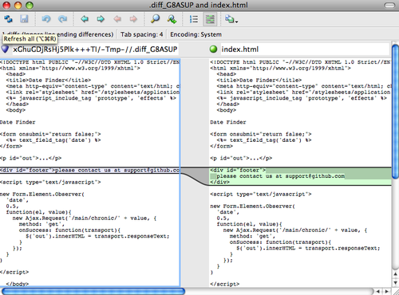

$ git config --global user.name "John Doe"
$ git config --global user.email johndoe@example.com配置 Git
你在 [_getting_started] 中看到，可以用 git config 配置 Git。
首先要做的事情就是设置你的名字和邮件地址：
现在，你会了解到许多更有趣的选项，并用类似的方式来定制 Git。
首先，快速回忆下：Git 使用一系列配置文件来保存你自定义的行为。
它首先会查找 /etc/gitconfig 文件，该文件含有系统里每位用户及他们所拥有的仓库的配置值。
如果你传递 --system 选项给 git config，它就会读写该文件。
接下来 Git 会查找每个用户的 ~/.gitconfig 文件（或者 ~/.config/git/config 文件）。
你可以传递 --global 选项让 Git 读写该文件。
最后 Git 会查找你正在操作的版本库所对应的 Git 目录下的配置文件（.git/config）。
这个文件中的值只对该版本库有效。
以上三个层次中每层的配置（系统、全局、本地）都会覆盖掉上一层次的配置，所以 .git/config 中的值会覆盖掉 /etc/gitconfig 中所对应的值。
|
Note
|
Git 的配置文件是纯文本的，所以你可以直接手动编辑这些配置文件，输入合乎语法的值。
但是运行 |
客户端基本配置
Git 能够识别的配置项分为两大类：客户端和服务器端。 其中大部分属于客户端配置 —— 可以依你个人的工作偏好进行配置。 尽管 Git 支持的选项 繁多，但其中大部分仅仅在某些罕见的情况下有意义。 我们只讲述最平常和最有用的选项。 如果想得到你当前版本的 Git 支持的选项列表，请运行
$ man git-config这个命令列出了所有可用的选项，以及与之相关的介绍。 你也可以在 http://git-scm.com/docs/git-config.html 找到同样的内容。
core.editor
默认情况下，Git 会调用环境变量（$VISUAL 或 $EDITOR）设置的任意文本编辑器，如果没有设置，会调用 vi 来创建和编辑你的提交以及标签信息。
你可以使用 core.editor 选项来修改默认的编辑器：
$ git config --global core.editor emacs现在，无论你定义了什么终端编辑器，Git 都会调用 Emacs 编辑信息。
commit.template
如果把此项指定为你的系统上某个文件的路径，当你提交的时候， Git 会使用该文件的内容作为提交的默认信息。
例如：假设你创建了一个叫 ~/.gitmessage.txt 的模板文件，类似这样：
subject line
what happened
[ticket: X]要想让 Git 把它作为运行 git commit 时显示在你的编辑器中的默认信息， 如下设置 commit.template：
$ git config --global commit.template ~/.gitmessage.txt
$ git commit然后当你提交时，编辑器中就会显示如下的提交信息占位符：
subject line
what happened
[ticket: X]
# Please enter the commit message for your changes. Lines starting
# with '#' will be ignored, and an empty message aborts the commit.
# On branch master
# Changes to be committed:
# (use "git reset HEAD <file>..." to unstage)
#
# modified: lib/test.rb
#
~
~
".git/COMMIT_EDITMSG" 14L, 297C如果你的团队对提交信息有格式要求，可以在系统上创建一个文件，并配置 Git 把它作为默认的模板，这样可以更加容易地使提交信息遵循格式。
core.pager
该配置项指定 Git 运行诸如 log 和 diff 等命令所使用的分页器。
你可以把它设置成用 more 或者任何你喜欢的分页器（默认用的是 less），当然也可以设置成空字符串，关闭该选项：
$ git config --global core.pager ''这样不管命令的输出量多少，Git 都会在一页显示所有内容。
user.signingkey
如果你要创建经签署的含附注的标签（正如 [_signing] 所述），那么把你的 GPG 签署密钥设置为配置项会更好。 如下设置你的密钥 ID：
$ git config --global user.signingkey <gpg-key-id>现在，你每次运行 git tag 命令时，即可直接签署标签，而无需定义密钥：
$ git tag -s <tag-name>core.excludesfile
正如 [_ignoring] 所述，你可以在你的项目的 .gitignore 文件里面规定无需纳入 Git 管理的文件的模板，这样它们既不会出现在未跟踪列表，也不会在你运行 git add 后被暂存。
不过有些时候，你想要在你所有的版本库中忽略掉某一类文件。
如果你的操作系统是 OS X，很可能就是指 .DS_Store。
如果你把 Emacs 或 Vim 作为首选的编辑器，你肯定知道以 ~ 结尾的临时文件。
这个配置允许你设置类似于全局生效的 .gitignore 文件。
如果你按照下面的内容创建一个 ~/.gitignore_global 文件：
*~
.DS_Store……然后运行 git config --global core.excludesfile ~/.gitignore_global，Git 将把那些文件永远地拒之门外。
help.autocorrect
假如你打错了一条命令，会显示：
$ git chekcout master
git：'chekcout' 不是一个 git 命令。参见 'git --help'。
您指的是这个么？
checkoutGit 会尝试猜测你的意图，但是它不会越俎代庖。
如果你把 help.autocorrect 设置成 1，那么只要有一个命令被模糊匹配到了，Git 会自动运行该命令。
$ git chekcout master
警告：您运行一个不存在的 Git 命令 'chekcout'。继续执行假定您要要运行的
是 'checkout'
在 0.1 秒钟后自动运行...注意提示信息中的“0.1 秒”。help.autocorrect 接受一个代表十分之一秒的整数。
所以如果你把它设置为 50, Git 将在自动执行命令前给你 5 秒的时间改变主意。
Git 中的着色
Git 充分支持对终端内容着色，对你凭肉眼简单、快速分析命令输出有很大帮助。 你可以设置许多的相关选项来满足自己的偏好。
color.ui
Git 会自动着色大部分输出内容，但如果你不喜欢花花绿绿，也可以关掉。 要想关掉 Git 的终端颜色输出，试一下这个：
$ git config --global color.ui false这个设置的默认值是 auto，它会着色直接输出到终端的内容；而当内容被重定向到一个管道或文件时，则忽略着色功能。
你也可以设置成 always，来忽略掉管道和终端的不同，即在任何情况下着色输出。
你很少会这么设置，在大多数场合下，如果你想在被重定向的输出中插入颜色码，可以传递 --color 标志给 Git 命令来强制它这么做。
默认设置就已经能满足大多数情况下的需求了。
color.*
要想具体到哪些命令输出需要被着色以及怎样着色，你需要用到和具体命令有关的颜色配置选项。
它们都能被置为 true、false 或 always：
color.branch color.diff color.interactive color.status
另外，以上每个配置项都有子选项，它们可以被用来覆盖其父设置，以达到为输出的各个部分着色的目的。
例如，为了让 diff 的输出信息以蓝色前景、黑色背景和粗体显示，你可以运行
$ git config --global color.diff.meta "blue black bold"
你能设置的颜色有：normal、black、red、green、yellow、blue、magenta、cyan 或 white。
正如以上例子设置的粗体属性，想要设置字体属性的话，可以选择包括：bold、dim、ul（下划线）、blink、reverse（交换前景色和背景色）。
外部的合并与比较工具
虽然 Git 自己内置了一个 diff 实现，而且到目前为止我们一直在使用它，但你能够用一个外部的工具替代它。
除此以外，你还能设置一个图形化的工具来合并和解决冲突，从而不必自己手动解决。
这里我们以一个不错且免费的工具 —— Perforce 图形化合并工具（P4Merge） —— 来展示如何用一个外部的工具来合并和解决冲突。
P4Merge 可以在所有主流平台上运行，所以安装上应该没有什么困难。
在这个例子中，我们使用的路径名可以直接应用在 Mac 和 Linux 上；在 Windows 上，/usr/local/bin 需要被改为你的环境中可执行文件所在的目录路径。
首先， 从 http://www.perforce.com/downloads/Perforce/ 下载 P4Merge。
接下来，你要编写一个全局包装脚本来运行你的命令。
我们会使用 Mac 上的路径来指定该脚本的位置，在其他系统上，它将是 p4merge 二进制文件所在的目录。
创建一个名为 extMerge 的脚本包装 merge 命令，让它把参数转发给 p4merge 二进制文件：
$ cat /usr/local/bin/extMerge
#!/bin/sh
/Applications/p4merge.app/Contents/MacOS/p4merge $*包装 diff 命令的脚本首先确保传递了七个参数过来，随后把其中两个转发给包装了 merge 的脚本。
默认情况下， Git 传递以下参数给 diff：
path old-file old-hex old-mode new-file new-hex new-mode由于你仅仅需要 old-file 和 new-file 参数，由包装 diff 的脚本来转发它们吧。
$ cat /usr/local/bin/extDiff
#!/bin/sh
[ $# -eq 7 ] && /usr/local/bin/extMerge "$2" "$5"你也需要确保这些脚本具有可执行权限：
$ sudo chmod +x /usr/local/bin/extMerge
$ sudo chmod +x /usr/local/bin/extDiff现在你可以修改配置文件来使用你自定义的合并和比较工具了。
这将涉及许多自定义设置：merge.tool 通知 Git 该使用哪个合并工具， mergetool.<tool>.cmd 规定命令运行的方式，mergetool.<tool>.trustExitCode 会通知 Git 程序的返回值是否表示合并操作成功，diff.external 通知 Git 该用什么命令做比较。
因此，你可以运行以下四条配置命令：
$ git config --global merge.tool extMerge
$ git config --global mergetool.extMerge.cmd \
'extMerge \"$BASE\" \"$LOCAL\" \"$REMOTE\" \"$MERGED\"'
$ git config --global mergetool.extMerge.trustExitCode false
$ git config --global diff.external extDiff或编辑你的 ~/.gitconfig 文件，添加以下各行：
[merge]
tool = extMerge
[mergetool "extMerge"]
cmd = extMerge "$BASE" "$LOCAL" "$REMOTE" "$MERGED"
trustExitCode = false
[diff]
external = extDiff待一切设置妥当后，如果你像这样运行 diff 命令：
$ git diff 32d1776b1^ 32d1776b1Git 将启动 P4Merge，而不是在命令行输出比较的结果，就像这样：

Figure 1. P4Merge.
如果你尝试合并两个分支，随后遇到了合并冲突，运行 git mergetool，Git 会调用 P4Merge 让你通过图形界面来解决冲突。
设置包装脚本的好处在于大大降低了改变 diff 和 merge 工具的工作量。
举个例子，想把 extDiff 和 extMerge 的工具改成 KDiff3，你要做的仅仅是编辑 extMerge 脚本文件：
$ cat /usr/local/bin/extMerge
#!/bin/sh
/Applications/kdiff3.app/Contents/MacOS/kdiff3 $*现在，Git 将使用 KDiff3 作为查看比较和解决合并冲突的工具。
Git 预设了许多其他的合并和解决冲突的工具，无需特别的设置你就能用上它们。 要想看到它支持的工具列表，试一下这个：
$ git mergetool --tool-help
'git mergetool --tool=<tool>' may be set to one of the following:
emerge
gvimdiff
gvimdiff2
opendiff
p4merge
vimdiff
vimdiff2
The following tools are valid, but not currently available:
araxis
bc3
codecompare
deltawalker
diffmerge
diffuse
ecmerge
kdiff3
meld
tkdiff
tortoisemerge
xxdiff
Some of the tools listed above only work in a windowed
environment. If run in a terminal-only session, they will fail.如果你不想用到 KDiff3 的所有功能，只是想用它来合并，那么 kdiff3 正符合你的要求，运行：
$ git config --global merge.tool kdiff3如果运行了以上命令，而没有设置 extMerge 和 extDiff 文件，Git 会用 KDiff3 做合并，让内置的 diff 来做比较。
格式化与多余的空白字符
格式化与多余的空白字符是许多开发人员在协作时，特别是在跨平台情况下，不时会遇到的令人头疼的琐碎的问题。 由于编辑器的不同或者文件行尾的换行符在 Windows 下被替换了，一些细微的空格变化会不经意地混入提交的补丁或其它协作成果中。 不用怕，Git 提供了一些配置项来帮助你解决这些问题。
core.autocrlf
假如你正在 Windows 上写程序，而你的同伴用的是其他系统（或相反），你可能会遇到 CRLF 问题。 这是因为 Windows 使用回车（CR）和换行（LF）两个字符来结束一行，而 Mac 和 Linux 只使用换行（LF）一个字符。 虽然这是小问题，但它会极大地扰乱跨平台协作。许多 Windows 上的编辑器会悄悄把行尾的换行字符转换成回车和换行，或在用户按下 Enter 键时，插入回车和换行两个字符。
Git 可以在你提交时自动地把回车和换行转换成换行，而在检出代码时把换行转换成回车和换行。
你可以用 core.autocrlf 来打开此项功能。
如果是在 Windows 系统上，把它设置成 true，这样在检出代码时，换行会被转换成回车和换行：
$ git config --global core.autocrlf true如果使用以换行作为行结束符的 Linux 或 Mac，你不需要 Git 在检出文件时进行自动的转换；然而当一个以回车加换行作为行结束符的文件不小心被引入时，你肯定想让 Git 修正。
你可以把 core.autocrlf 设置成 input 来告诉 Git 在提交时把回车和换行转换成换行，检出时不转换：
$ git config --global core.autocrlf input这样在 Windows 上的检出文件中会保留回车和换行，而在 Mac 和 Linux 上，以及版本库中会保留换行。
如果你是 Windows 程序员，且正在开发仅运行在 Windows 上的项目，可以设置 false 取消此功能，把回车保留在版本库中：
$ git config --global core.autocrlf falsecore.whitespace
Git 预先设置了一些选项来探测和修正多余空白字符问题。 它提供了六种处理多余空白字符的主要选项 —— 其中三个默认开启，另外三个默认关闭，不过你可以自由地设置它们。
默认被打开的三个选项是：blank-at-eol，查找行尾的空格；blank-at-eof，盯住文件底部的空行；space-before-tab，警惕行头 tab 前面的空格。
默认被关闭的三个选项是：indent-with-non-tab，揪出以空格而非 tab 开头的行（你可以用 tabwidth 选项控制它）；tab-in-indent，监视在行头表示缩进的 tab；cr-at-eol，告诉 Git 忽略行尾的回车。
通过设置 core.whitespace，你可以让 Git 按照你的意图来打开或关闭以逗号分割的选项。
要想关闭某个选项，你可以在输入设置选项时不指定它或在它前面加个 -。
例如，如果你想要打开除 cr-at-eol 之外的所有选项：
$ git config --global core.whitespace \
trailing-space,space-before-tab,indent-with-non-tab当你运行 git diff 命令并尝试给输出着色时，Git 将探测到这些问题，因此你在提交前就能修复它们。
用 git apply 打补丁时你也会从中受益。
如果正准备应用的补丁存有特定的空白问题，你可以让 Git 在应用补丁时发出警告：
$ git apply --whitespace=warn <patch>或者让 Git 在打上补丁前自动修正此问题：
$ git apply --whitespace=fix <patch>这些选项也能运用于 git rebase。
如果提交了有空白问题的文件，但还没推送到上游，你可以运行 git rebase --whitespace=fix 来让 Git 在重写补丁时自动修正它们。
服务器端配置
Git 服务器端的配置项相对来说并不多，但仍有一些饶有生趣的选项值得你一看。
receive.fsckObjects
Git 能够确认每个对象的有效性以及 SHA-1 检验和是否保持一致。
但 Git 不会在每次推送时都这么做。这个操作很耗时间，很有可能会拖慢提交的过程，特别是当库或推送的文件很大的情况下。
如果想在每次推送时都要求 Git 检查一致性，设置 receive.fsckObjects 为 true 来强迫它这么做：
$ git config --system receive.fsckObjects true现在 Git 会在每次推送生效前检查库的完整性，确保没有被有问题的客户端引入破坏性数据。
receive.denyNonFastForwards
如果你变基已经被推送的提交，继而再推送，又或者推送一个提交到远程分支，而这个远程分支当前指向的提交不在该提交的历史中，这样的推送会被拒绝。
这通常是个很好的策略，但有时在变基的过程中，你确信自己需要更新远程分支，可以在 push 命令后加 -f 标志来强制更新（force-update）。
要禁用这样的强制更新推送（force-pushes），可以设置 receive.denyNonFastForwards：
$ git config --system receive.denyNonFastForwards true稍后我们会提到，用服务器端的接收钩子也能达到同样的目的。 那种方法可以做到更细致的控制，例如禁止某一类用户做非快进（non-fast-forwards）推送。
receive.denyDeletes
有一些方法可以绕过 denyNonFastForwards 策略。其中一种是先删除某个分支，再连同新的引用一起推送回该分支。
把 receive.denyDeletes 设置为 true 可以把这个漏洞补上：
$ git config --system receive.denyDeletes true这样会禁止通过推送删除分支和标签 — 没有用户可以这么做。 要删除远程分支，必须从服务器手动删除引用文件。 通过用户访问控制列表（ACL）也能够在用户级的粒度上实现同样的功能，你将在 [_an_example_git_enforced_policy] 一节学到具体的做法。